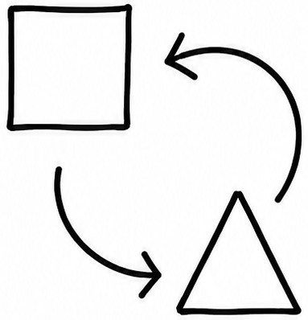
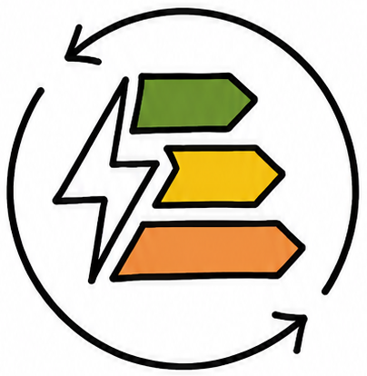
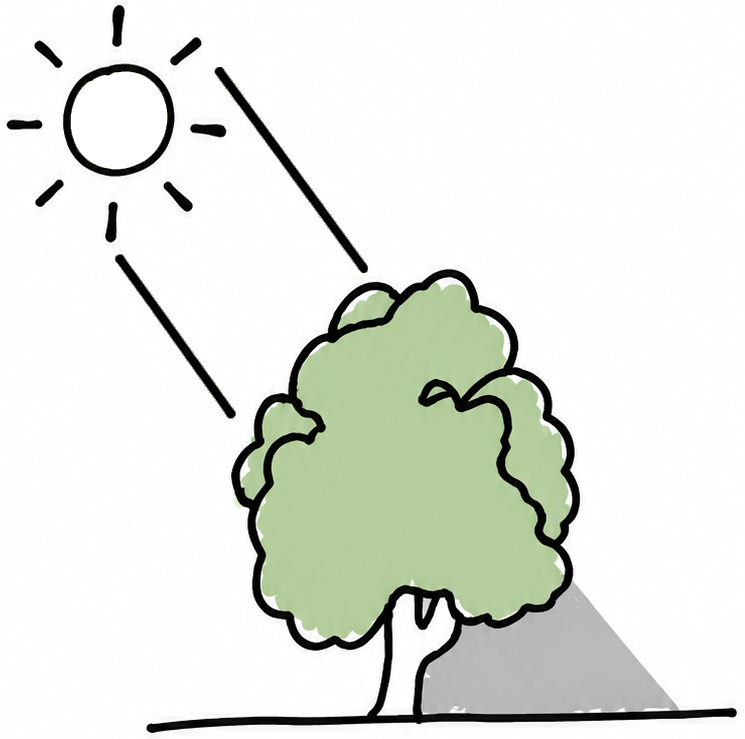
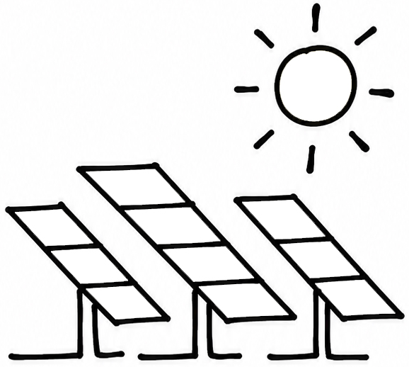
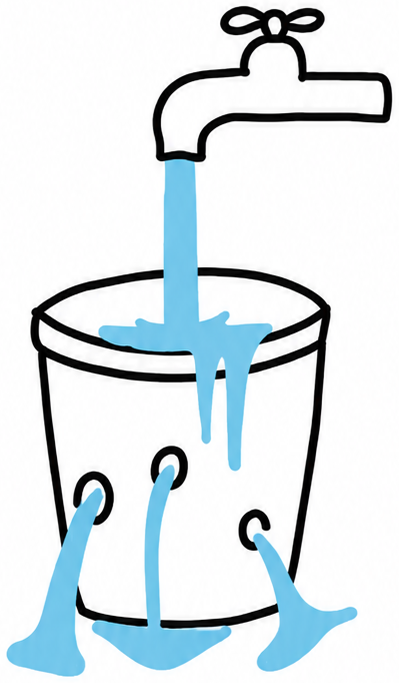
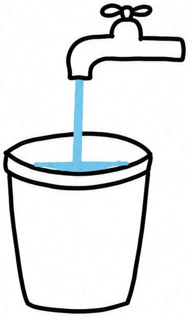
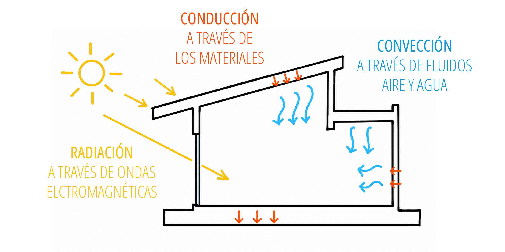
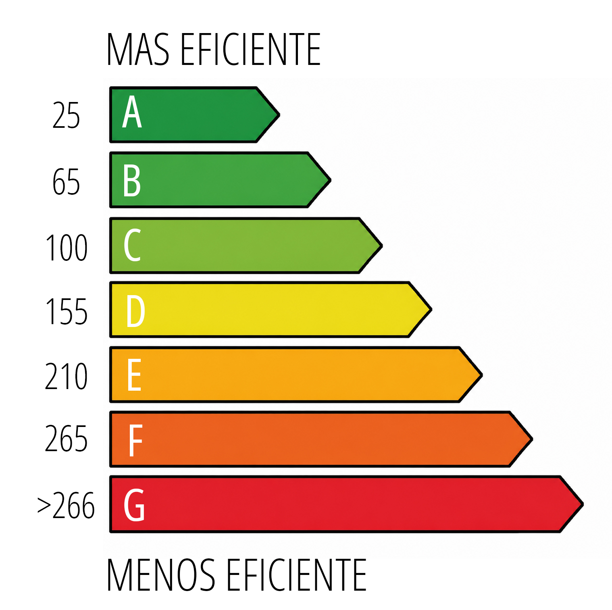

INTRODUCCIÓN
Tocá cada bloque para desplegarlo.
01 DEFINICIÓN · ¿POR QUÉ? · ¿PARA QUIÉN?
DEFINICIÓN
El Manual de herramientas de diseño sostenible (MHDS) es un conjunto ordenado de herramientas proyectuales combinables que permiten configurar viviendas unifamiliares accesibles, eficientes y evolutivas en un contexto situado.
No se busca establecer un estándar único, sino ofrecer un conjunto de herramientas que acompañen la toma de decisiones proyectuales desde el inicio del proyecto, con una perspectiva situada, crítica y técnicamente fundamentada.
¿POR QUÉ?
Problema que aborda:
Surge como una herramienta destinada a abordar el elevado consumo energético en las viviendas para el acondicionamiento, junto con las consecuencias que esto genera en términos de disconfort, sobrecostos y uso ineficiente de la energía.
¿PARA QUIÉN?
Destinatarios:
Es una herramienta compartida, que puede utilizarse en las primeras instancias del proyecto para ilustrar, explicar y visibilizar los beneficios de una vivienda energéticamente eficiente, por lo que está dirigido a un doble público: profesionales de la arquitectura y la construcción y clientes/usuarios para que puedan comprender y participar de manera más informada en el proceso de diseño y obra.
02 CONCEPTOS CENTRALES QUE LO SUSTENTAN
Para orientar la lectura, el manual introduce conceptos rectores que funcionan como ejes estructurantes de las herramientas proyectuales.
Estos principios de flexibilidad, habitabilidad y eficiencia energética, se articulan bajo el paradigma de la sostenibilidad, integrándose de manera recíproca con el contexto local y el programa de usos.
Desde esta perspectiva, el manual propone una arquitectura sensible a las condiciones del lugar y a la vida cotidiana de sus habitantes.

Flexibilidad:
capacidad del espacio para adaptarse a cambios de uso y condiciones climáticas sin grandes intervenciones.
Habitabilidad:
calidad del ambiente construido en relación con el confort, ventilación, asoleamiento, privacidad y la relación con los espacios exteriores.

Eficiencia energética:
optimización de recursos para reducir el consumo sin detrimento de la calidad ambiental.
03 DIFUSIÓN Y CONCIENTIZACIÓN: INCORPORACIÓN DE OBJETIVOS DE DESARROLLO SOSTENIBLE (ODS)
Resulta fundamental fomentar la concientización para que tanto profesionales como usuarios reconozcan el impacto de las decisiones proyectuales en el confort, el consumo y la calidad de vida. En este marco, la difusión de buenas prácticas actúa como un motor para alcanzar una educación de calidad (ODS 4), permitiendo que el conocimiento técnico se transforme en una herramienta de empoderamiento social a través del acceso a información clara, actualizada y aplicable.
La libre circulación de saberes contribuye directamente a reducir las desigualdades (ODS 10) en el acceso a criterios de diseño sostenible, favoreciendo la toma de decisiones informadas y fortaleciendo una cultura proyectual responsable. Este enfoque democratizador es esencial para garantizar el acceso a una energía asequible y no contaminante (ODS 7), ya que la eficiencia energética en la vivienda comienza con una comprensión profunda de las estrategias pasivas y el desempeño del hábitat.
Asimismo, la difusión sostenida impulsa transformaciones colectivas que impactan en la industria, innovación e infraestructura (ODS 9), instalando nuevos estándares de calidad y promoviendo el desarrollo de tecnologías locales eficientes. Al incentivar la demanda de soluciones que respeten la producción y el consumo responsables (ODS 12), se potencia la capacidad de los proyectos para generar bienestar sin comprometer los recursos futuros. En última instancia, comunicar y visibilizar estas experiencias no solo transmite información técnica, sino que construye comunidad y sienta las bases de ciudades y comunidades sostenibles (ODS 11), promoviendo un cambio cultural duradero y resiliente.
04 CONCEPTOS CLAVES PARA ENTENDER EL MANUAL
Estrategias de acondicionamiento

PASIVAS:
Refiere a aquellas que buscan obtener condiciones de confort adecuadas sin la incorporación de equipos que requieran el aporte de energía exterior para su funcionamiento, que es autónomo. Este tipo de estrategias de diseño son el pilar fundamental de la arquitectura bioclimática. (Bardou y Arzoumanian, 1981)

ACTIVAS:
Incorporan dispositivos electro–mecánicos para optimizar el acondicionamiento y optimizar el rendimiento de los sistemas pasivos. Estas estrategias, implican mayor desarrollo tecnológico y mayores costos de inversión y funcionamiento, elegir el sistema más eficiente resultará en un menor costo energético.
05 PRINCIPIO BÁSICO DE EFICIENCIA ENERGÉTICA · MECANISMOS DE TRANSFERENCIA DE CALOR
PRINCIPIO BÁSICO DE EFICIENCIA ENERGÉTICA EN LA VIVIENDA

La vivienda es como un balde de agua. Para que el balde cumpla su función, debe estar en buen estado: si presenta agujeros, el agua inevitablemente se pierde. Por más que abramos la canilla para rellenarlo, vamos a estar desperdiciando agua y nunca lograremos llenarlo si los agujeros son demasiado grandes. En esta comparación, la vivienda representa el balde, las pérdidas térmicas equivalen a los agujeros, y la energía aportada (por fuentes renovables o sistemas activos) es el agua que fluye desde la canilla.

En esta metáfora, lo que queremos decir es que no alcanza con incorporar energías renovables si la envolvente edilicia no está bien resuelta.
Antes de “abrir la canilla”, es indispensable “tapar los agujeros”: mejorar la orientación, la ventilación, el aislamiento y los materiales, reduciendo al máximo la demanda energética. Solo una vez optimizada la eficiencia pasiva, resulta pertinente evaluar estrategias activas o sistemas complementarios.
MECANISMOS DE TRANSFERENCIA DE CALOR EN LA VIVIENDA

06 TRANSMITANCIA TÉRMICA (K)
Se define transmitancia térmica “K” (en W/m²K) como la cantidad de energía calórica medida en Watts, que transmite en estado de régimen un muro o techo por metro cuadrado y por grado Kelvin de diferencia de temperatura entre el interior y el exterior.
Los valores máximos de transmitancia establecidos en la Norma IRAM 11603 se presentan en la siguiente tabla simplificada introducen exigencias relativas a la protección que debe ser lograda a fin de garantizar ciertas condiciones ambientales de confort, así como también evitar la aparición de fenómenos de condensación de vapor de agua sobre las superficies interiores de la envolvente en todo el recinto habitable.
| Nivel | CONDICIÓN INVIERNO MURO | CONDICIÓN VERANO CUBIERTA |
|---|---|---|
| A | 0,33 W/m²K | 0,18 W/m²K |
| B1 | 0,62 W/m²K | 0,31 W/m²K |
| B | 0,91 W/m²K | 0,45 W/m²K |
| C | 1,59 W/m²K | 0,72 W/m²K |
Tabla 1: Niveles de transmitancia térmica admitidos para la región centro de Santa Fe.
07 ETIQUETADO DE VIVIENDAS
En Argentina, existe el Programa Nacional de Etiquetado de Viviendas (PRONEV), un sistema que propone una escala comparativa —similar al que tienen los electrodomésticos— del desempeño energético de las viviendas.
La norma IRAM 11.900 define el método de cálculo, y la Ley 13903/19 de la Provincia de Santa Fe “Etiquetado de Eficiencia Energética de inmuebles destinados a vivienda” promueve e impulsa la adhesión de cada municipio a la ley de etiquetado.
El PRONEV tiene por objeto implementar un sistema unificado de etiquetado de eficiencia energética residencial para todo el territorio nacional, permitiendo clasificar las viviendas según su grado de optimización en el requerimiento global de energía primaria. Dicha certificación se materializa en un documento que indica la calificación del inmueble mediante una escala alfabética que va desde la “A” (máximo rendimiento) hasta la “G” (mínimo desempeño), vinculada directamente a los rangos establecidos por el Índice de Prestaciones Energéticas (IPE).

La localidad vecina de San Carlos Sud fue pionera en adhesión a la Ley de Etiquetado en la provincia de Santa Fe.